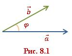
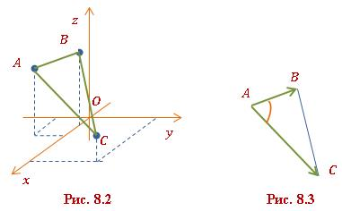
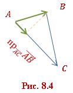
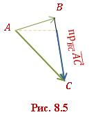

Теоретичні відомості

Відеоматеріали

Питання і відповіді

Скалярним добутком векторів \(\vec{a}(a_x; a_y; a_z)\) і \(\vec{b}(b_x; b_y; b_z)\) називають число, яке обчислюється за формулою:
\[ \vec{a} \cdot \vec{b} = a_x b_x + a_y b_y + a_z b_z. \quad (8.1) \]
Позначають скалярний добуток \( «\cdot» \), наприклад, \(\vec{a} \cdot \vec{b}\) або просто \(\vec{a} \vec{b}\).
Отже, скалярний добуток двох векторів дорівнює сумі добутків їхніх однойменних координат.
Приклад 8.1. Знайти скалярний добуток векторів \(\vec{a}(-4;1;3)\) та \(\vec{b}(2;6;5)\).
Розв’язання
За формулою (8.1):
\[ \vec{a} \cdot \vec{b} = -4 \cdot 2 + 1 \cdot 6 + 3 \cdot 5 = -8 + 6 + 15 = 13. \]
Відповідь. \( 13 \).
Скалярний квадрат вектора. Розглянемо скалярний добуток вектора на самого себе. Нехай дано вектор \(\vec{a}(a_x; a_y; a_z)\). Тоді:
\[ \vec{a} \cdot \vec{a} = a_x \cdot a_x + a_y \cdot a_y + a_z \cdot a_z = a_x^2 + a_y^2 + a_z^2. \]
Оскільки \(\sqrt{a_x^2 + a_y^2 + a_z^2} = |\vec{a}|\) є довжиною (модулем) вектора \(\vec{a}\), то:
\[ \vec{a} \cdot \vec{a} = |\vec{a}|^2. \]
Добуток \(\vec{a} \cdot \vec{a}\) позначають як \(\vec{a}^2\) і називають скалярним квадратом вектора. Таким чином, скалярний квадрат вектора дорівнює квадрату його модуля:
\[ \vec{a}^2 = |\vec{a}|^2. \quad (8.2) \]
Скалярним добутком двох ненульових векторів \(\vec{a}\) і \(\vec{b}\) називається число, яке дорівнює добутку їхніх довжин (модулів) на косинус кута між ними (рис. 8.1):
\[ \vec{a} \cdot \vec{b} = |\vec{a}| \cdot |\vec{b}| \cos \varphi, \quad (8.3) \]
де \(\varphi\) – кут між векторами \(\vec{a}\) і \(\vec{b}\) (\(\varphi = \angle \vec{a}, \vec{b}\)).

Якщо хоча б один із векторів нульовий (\(\vec{a} = 0\) або \(\vec{b} = 0\)), то скалярний добуток дорівнює нулю.
Приклад 8.2. Знайти скалярний добуток векторів \(\vec{a}\) і \(\vec{b}\), якщо \(|\vec{a}| = 2\), \(|\vec{b}| = 5\), \(\angle(\vec{a}; \vec{b}) = \pi/6\).
Розв’язання
Використаємо формулу (8.3):
\[ \vec{a} \cdot \vec{b} = |\vec{a}| \cdot |\vec{b}| \cos \varphi = 2 \cdot 5 \cdot \cos \frac{\pi}{6} = 10 \cdot \frac{\sqrt{3}}{2} = 5\sqrt{3}. \]
Примітка. Значення \(\cos \pi/6 = \sqrt{3}/2\) можна знайти в тригонометричній таблиці. З математичної точки зору, скалярний добуток є безрозмірним числом (наприклад, \(5\sqrt{3}\)). Однак у фізичних задачах він набуває змісту й одиниць вимірювання. Наприклад, у задачі про роботу сили (\(A = \vec{F} \cdot \vec{s}\)) результат записують у джоулях, наприклад, \(5\sqrt{3}\) Дж. Детальніше про це – у підручниках із фізики.
Відповідь. \(5\sqrt{3}\).
Скалярний добуток векторів має алгебраїчні та геометричні властивості, які роблять його потужним інструментом для розв’язання задач.
Алгебраїчні властивості:
Геометричні властивості:
За означенням скалярного добутку \(\vec{a} \cdot \vec{b} = |\vec{a}| \cdot |\vec{b}| \cos \varphi\), де \(\varphi\) – кут між векторами \(\vec{a}\) і \(\vec{b}\). Якщо \(\vec{a} \neq 0\) і \(\vec{b} \neq 0\), то косинус кута можна виразити як:
\[ \cos \varphi = \frac{\vec{a} \cdot \vec{b}}{|\vec{a}| \cdot |\vec{b}|}. \quad (8.4) \]
Отже, косинус кута між ненульовими векторами \(\vec{a}\) і \(\vec{b}\) дорівнює їхньому скалярному добутку, поділеному на добуток їхніх довжин.
Формула для обчислення косинуса кута у декартовій системі координат. У тривимірному просторі. Нехай у тривимірній прямокутній декартовій системі координат задано вектори:
\[ \vec{a} = (a_x; a_y; a_z), \quad \vec{b} = (b_x; b_y; b_z). \]
Тоді скалярний добуток між цими векторами
\[ \vec{a} \cdot \vec{b} = a_x b_x + a_y b_y + a_z b_z, \]
довжини векторів обчислюються як
\[ |\vec{a}| = \sqrt{a_x^2 + a_y^2 + a_z^2}, \quad |\vec{b}| = \sqrt{b_x^2 + b_y^2 + b_z^2}. \]
Згідно з формулою (8.4), косинус кута \(\varphi = \angle (\vec{a}; \vec{b})\) між векторами можна обчислити так:
\[ \cos \varphi = \frac{a_x b_x + a_y b_y + a_z b_z}{\sqrt{a_x^2 + a_y^2 + a_z^2} \cdot \sqrt{b_x^2 + b_y^2 + b_z^2}}. \quad (8.5) \]
Ця формула дозволяє зручно обчислювати косинус кута між векторами у тривимірному просторі за їхніми координатами.
На площині. Якщо вектори \(\vec{a} = (a_x; a_y)\) і \(\vec{b} = (b_x; b_y)\) задано в двовимірній прямокутній декартовій системі координат, то косинус кута \(\varphi = \angle (\vec{a}; \vec{b})\) обчислюється так:
\[ \cos \varphi = \frac{a_x b_x + a_y b_y}{\sqrt{a_x^2 + a_y^2} \cdot \sqrt{b_x^2 + b_y^2}}. \quad (8.6) \]
Примітка. Щоб знайти міру кута \(\varphi\), можна скористатися функцією арккосинуса (\(\varphi = \arccos(\cos \varphi)\)) або таблицями значень косинусів.
Приклад 8.3. Дано два вектори \(\vec{a} = (1;1;0)\) і \(\vec{b} = (1;0;1)\). Знайти кут між ними.
Розв’язання
Використаємо формулу для косинуса кута між векторами (8.4) або можна скористатися безпосередньо формулою (8.5):
\[ \cos \varphi = \frac{\vec{a} \cdot \vec{b}}{|\vec{a}| \cdot |\vec{b}|}. \]
Знайдемо скалярний добуток векторів:
\[ \vec{a} \cdot \vec{b} = 1 \cdot 1 + 1 \cdot 0 + 0 \cdot 1 = 1. \]
Обчислимо довжини векторів:
\[ |\vec{a}| = \sqrt{1^2 + 1^2 + 0^2} = \sqrt{2}, \quad |\vec{b}| = \sqrt{1^2 + 0^2 + 1^2} = \sqrt{2}. \]
Підставимо у формулу:
\[ \cos \varphi = \frac{\vec{a} \cdot \vec{b}}{|\vec{a}| \cdot |\vec{b}|} = \frac{1}{\sqrt{2} \cdot \sqrt{2}} = \frac{1}{2}. \]
Знаходимо кут за допомогою арккосинуса:
\[ \varphi = \arccos \frac{1}{2} = \frac{\pi}{3}. \]
Оскільки \(\frac{\pi}{3}\) радіан відповідає \(60^\circ\), можна записати відповідь і в градусах:
\[ \varphi = 60^\circ. \]
Відповідь. \(60^\circ\).
Приклад 8.4. Знайти кут між векторами \(\vec{a} = 2\vec{i} - \vec{j} + \vec{k}\), \(\vec{b} = -\vec{i} + \vec{j}\).
Розв’язання
Запишемо координати векторів у вигляді:
\[ \vec{a} = (2; -1; 1), \quad \vec{b} = (-1; 1; 0). \]
Використаємо формулу для косинуса кута між векторами (8.4):
\[ \cos \varphi = \frac{\vec{a} \cdot \vec{b}}{|\vec{a}| \cdot |\vec{b}|}. \]
Знайдемо скалярний добуток векторів:
\[ \vec{a} \cdot \vec{b} = 2 \cdot (-1) + (-1) \cdot 1 + 1 \cdot 0 = -3. \]
Обчислимо довжини векторів:
\[ |\vec{a}| = \sqrt{2^2 + (-1)^2 + 1^2} = \sqrt{6}, \quad |\vec{b}| = \sqrt{(-1)^2 + 1^2 + 0^2} = \sqrt{2}. \]
Підставимо у формулу:
\[ \cos \varphi = \frac{-3}{\sqrt{6} \cdot \sqrt{2}} = \frac{-3}{2\sqrt{3}} = -\frac{\sqrt{3}}{2}. \]
Знаходимо кут за допомогою оберненого косинуса:
\[ \varphi = \arccos \left( -\frac{\sqrt{3}}{2} \right) = \pi - \arccos \frac{\sqrt{3}}{2} = \pi - \frac{\pi}{6} = \frac{5\pi}{6}. \]
У градусах \(\varphi = 180^\circ - 30^\circ = 150^\circ\).
Відповідь. \(150^\circ\).
Проекція вектора \(\vec{a}\) на вісь \(l\), напрямок якої збігається з напрямом вектора \(\vec{a}\), виражається формулою:
\[ \text{пр}_l \vec{a} = |\vec{a}| \cos \varphi, \]
де \(\varphi\) – кут між вектором \(\vec{a}\) і віссю \(l\).
Оскільки виконуються рівності:
\[ |\vec{a}| \cos \varphi = \text{пр}_{\vec{b}} \vec{a}, \quad |\vec{b}| \cos \varphi = \text{пр}_{\vec{a}} \vec{b}, \]
то, підставляючи ці вирази у формулу скалярного добутку \(\vec{a} \cdot \vec{b} = |\vec{a}| \cdot |\vec{b}| \cos \varphi\), отримуємо:
\[ \vec{a} \cdot \vec{b} = |\vec{b}| \text{пр}_{\vec{b}} \vec{a} = |\vec{a}| \text{пр}_{\vec{a}} \vec{b}. \quad (8.7) \]
Формули для обчислення проекцій:
Проекція вектора \(\vec{a}\) на вектор \(\vec{b}\):
\[ \text{пр}_{\vec{b}} \vec{a} = \frac{\vec{a} \cdot \vec{b}}{|\vec{b}|}. \quad (8.8) \]
Проекція вектора \(\vec{b}\) на вектор \(\vec{a}\):
\[ \text{пр}_{\vec{a}} \vec{b} = \frac{\vec{a} \cdot \vec{b}}{|\vec{a}|}. \quad (8.9) \]
Приклад 8.5. Знайти проекцію вектора \(\vec{a} = (0;4;1)\) на вектор \(\vec{b} = (-1;2;7)\).
Розв’язання
Використовуючи формулу для проекції вектора \(\vec{a}\) на вектор \(\vec{b}\) (8.8), отримаємо:
\[ \text{пр}_{\vec{b}} \vec{a} = \frac{\vec{a} \cdot \vec{b}}{|\vec{b}|} = \frac{0 \cdot (-1) + 4 \cdot 2 + 1 \cdot 7}{\sqrt{(-1)^2 + 2^2 + 7^2}} = \frac{15}{3\sqrt{6}} = \frac{5}{\sqrt{6}}. \]
Відповідь: \(\text{пр}_{\vec{b}} \vec{a} = \frac{5}{\sqrt{6}}\).
Приклад 8.6. Трикутник задано своїми вершинами \(A(3;-2;4)\), \(B(1;0;5)\) і \(C(6;4;2)\). Знайти: 1) величину кута \(A\); 2) проекцію сторони \(AB\) на сторону \(AC\); 3) проекцію сторони \(AC\) на сторону \(BC\).
Розв’язання
1) Розглянемо схематичний рисунок трикутника \(ABC\) (рис. 8.2) і побудуємо на сторонах \(AB\) і \(AC\) відповідно вектори \(\overrightarrow{AB}\) і \(\overrightarrow{AC}\) (рис. 8.3).
Згідно з формулою (8.4):
\[ \cos \varphi = \frac{\vec{a} \cdot \vec{b}}{|\vec{a}| \cdot |\vec{b}|}, \]
для кута \(\angle A\) використовуємо вектори \(\overrightarrow{AB}\) і \(\overrightarrow{AC}\):
\[ \cos \angle A = \frac{\overrightarrow{AB} \cdot \overrightarrow{AC}}{|\overrightarrow{AB}| \cdot |\overrightarrow{AC}|}. \]
Спочатку знайдемо координати векторів \(\overrightarrow{AB}\) і \(\overrightarrow{AC}\):
\[ \overrightarrow{AB} = (1-3; 0-(-2); 5-4) = (-2; 2; 1), \]
\[ \overrightarrow{AC} = (6-3; 4-(-2); 2-4) = (3; 6; -2). \]
Далі обчислюємо скалярний добуток:
\[ \overrightarrow{AB} \cdot \overrightarrow{AC} = (-2) \cdot 3 + 2 \cdot 6 + 1 \cdot (-2) = -6 + 12 - 2 = 4. \]
І довжини векторів:
\[ |\overrightarrow{AB}| = \sqrt{(-2)^2 + 2^2 + 1^2} = \sqrt{4 + 4 + 1} = \sqrt{9} = 3, \]
\[ \overrightarrow{AC} = \sqrt{3^2 + 6^2 + (-2)^2} = \sqrt{9 + 36 + 4} = \sqrt{49} = 7. \]
Тепер можемо знайти косинус кута:
\[ \cos \angle A = \frac{4}{3 \cdot 7} = \frac{4}{21}. \]
Кут \(\angle A\):
\[ \angle A = \arccos \frac{4}{21} \approx 79^\circ. \]
2) Для знаходження проекції сторони \(AB\) на сторону \(AC\) (рис. 8.4) скористаємося формулою (8.8):
\[ \text{пр}_{\vec{b}} \vec{a} = \frac{\vec{a} \cdot \vec{b}}{|\vec{b}|} = \text{пр}_{\overrightarrow{AC}} \overrightarrow{AB} = \frac{\overrightarrow{AB} \cdot \overrightarrow{AC}}{|\overrightarrow{AC}|}. \]
Підставляємо знайдені значення:
\[ \text{пр}_{\overrightarrow{AC}} \overrightarrow{AB} = \frac{4}{7}. \]
3) Для знаходження проекції сторони \(AC\) на сторону \(BC\) (рис. 8.5) скористаємося формулою (8.8):
\[ \text{пр}_{\vec{b}} \vec{a} = \frac{\vec{a} \cdot \vec{b}}{|\vec{b}|} = \text{пр}_{\overrightarrow{BC}} \overrightarrow{AC} = \frac{\overrightarrow{AC} \cdot \overrightarrow{BC}}{|\overrightarrow{BC}|}. \]
Необхідно знайти ще координати вектора \(\overrightarrow{BC}\), а також скалярний добуток векторів \(\overrightarrow{AC}\) і \(\overrightarrow{BC}\) та довжину вектора \(\overrightarrow{BC}\):
\[ \overrightarrow{BC} = (6-1; 4-0; 2-5) = (5; 4; -3), \]
\[ \overrightarrow{AC} \cdot \overrightarrow{BC} = 3 \cdot 5 + 6 \cdot 4 + (-2) \cdot (-3) = 15 + 24 + 6 = 45, \]
\[ |\overrightarrow{BC}| = \sqrt{5^2 + 4^2 + (-3)^2} = \sqrt{25 + 16 + 9} = \sqrt{50} = 5\sqrt{2}. \]
Підставляємо знайдені значення:
\[ \text{пр}_{\overrightarrow{BC}} \overrightarrow{AC} = \frac{45}{5\sqrt{2}} = \frac{9}{\sqrt{2}}. \]
Відповідь. 1) \(\angle A \approx 79^\circ\); 2) \(\text{пр}_{\overrightarrow{AC}} \overrightarrow{AB} = \frac{4}{7}\); 3) \(\text{пр}_{\overrightarrow{BC}} \overrightarrow{AC} = \frac{9}{\sqrt{2}}\).
Робота сили
Формула для обчислення роботи \(A\), виконаної сталою силою \(\vec{F}\) при переміщенні матеріальної точки на шляху \(|\vec{s}|\), виглядає так:
\[ A = \vec{F} \cdot \vec{s} = |\vec{F}| \cdot |\vec{s}| \cdot \cos \angle (\vec{F}; \vec{s}), \quad (8.10) \]
де \(\vec{F} \cdot \vec{s}\) – скалярний добуток вектора сили і вектора переміщення, \(|\vec{F}|\) – величина сили, \(|\vec{s}|\) – довжина шляху (вектора переміщення), \(\angle (\vec{F}; \vec{s})\) – кут між вектором сили і вектором переміщення.
Примітка. З урахуванням того, що \(\angle (\vec{F}; \vec{s})\) є єдиним кутом, який враховується в обчисленні роботи сили, і він визначається лише між двома векторами: силою та переміщенням. Якщо ж є кілька сил, то кут визначається між рівнодійною силою та шляхом.
Приклад 8.7. Обчислити роботу рівнодійної сили \(\vec{F}\), яка є сумою трьох сил \(\vec{F_1} = (3;-4;5)\), \(\vec{F_2} = (2;1;-4)\), \(\vec{F_3} = (-1;6;2)\), прикладених до матеріальної точки, що переміщається прямолінійно від точки \(M_1(4;2;-3)\) до точки \(M_2(7;4;1)\).
Розв’язання
Знайдемо рівнодійну силу \(\vec{F}\). Рівнодійна сила \(\vec{F}\) – це векторна сума всіх сил:
\[ \vec{F} = \vec{F_1} + \vec{F_2} + \vec{F_3} = (3;-4;5) + (2;1;-4) + (-1;6;2) = (4;3;3). \]
Знайдемо вектор переміщення \(\vec{s}\). Вектор переміщення \(\vec{s}\) – це різниця координат точок \(M_1\) і \(M_2\):
\[ \vec{s} = \overrightarrow{M_1 M_2} = (7;4;1) - (4;2;-3) = (3;2;4). \]
Обчислимо роботу. Робота \(A\) визначається як скалярний добуток рівнодійної сили \(\vec{F}\) і вектора переміщення \(\vec{s}\) прямолінійного руху:
\[ A = \vec{F} \cdot \vec{s}. \]
Виконуємо обчислення скалярного добутку:
\[ A = (4;3;3) \cdot (3;2;4) = 4 \cdot 3 + 3 \cdot 2 + 3 \cdot 4 = 12 + 6 + 12 = 30. \]
Отже, робота, виконана рівнодійною силою:
Відповідь. \(A = 30\) одиниць роботи.

Число, яке дорівнює сумі добутків їхніх однойменних координат:
\(\vec{a} \cdot \vec{b} = a_x b_x + a_y b_y + a_z b_z.\)
Позначають через крапку «\(\cdot\)»: \(\vec{a} \cdot \vec{b}\) або просто \(ab\).
Це скалярний добуток вектора самого на себе:
\(\vec{a} \cdot \vec{a} = |\vec{a}|^2.\)
\(|\vec{a}| = \sqrt{\vec{a} \cdot \vec{a}} = \sqrt{a^2}.\)
Скалярний добуток двох векторів дорівнює добутку їхніх довжин на косинус кута між ними:
\(\vec{a} \cdot \vec{b} = |\vec{a}| |\vec{b}| \cos \varphi.\)
Коли хоча б один із векторів нульовий або коли вектори перпендикулярні.
1. Комутативність: \(\vec{a} \cdot \vec{b} = \vec{b} \cdot \vec{a}\)
2. Лінійність: \((\lambda \vec{a}) \cdot \vec{b} = \lambda (\vec{a} \cdot \vec{b})\)
3. Дистрибутивність: \(\vec{a} \cdot (\vec{b} + \vec{c}) = \vec{a} \cdot \vec{b} + \vec{a} \cdot \vec{c}\)
Якщо \(\varphi\) гострий (0° < \(\varphi\) < 90°), то \(\vec{a} \cdot \vec{b} > 0\).
Якщо \(\varphi\) тупий (90° < \(\varphi\) < 180°), то \(\vec{a} \cdot \vec{b} < 0\).
\(\vec{a} \cdot \vec{b} = 0 \iff \vec{a} \perp \vec{b}.\)
\(\cos \varphi = \frac{\vec{a} \cdot \vec{b}}{|\vec{a}| |\vec{b}|}.\)
\(\cos \varphi = \frac{a_x b_x + a_y b_y + a_z b_z}{\sqrt{a_x^2 + a_y^2 + a_z^2} \cdot \sqrt{b_x^2 + b_y^2 + b_z^2}}.\)
\(\cos \varphi = \frac{a_x b_x + a_y b_y}{\sqrt{a_x^2 + a_y^2} \cdot \sqrt{b_x^2 + b_y^2}}.\)
13. Як обчислити проекцію вектора \(\vec{a}\) на вектор \(\vec{b}\)?
\(\text{пр}_{\vec{b}} \vec{a} = \frac{\vec{a} \cdot \vec{b}}{|\vec{b}|}.\)
Молодець!